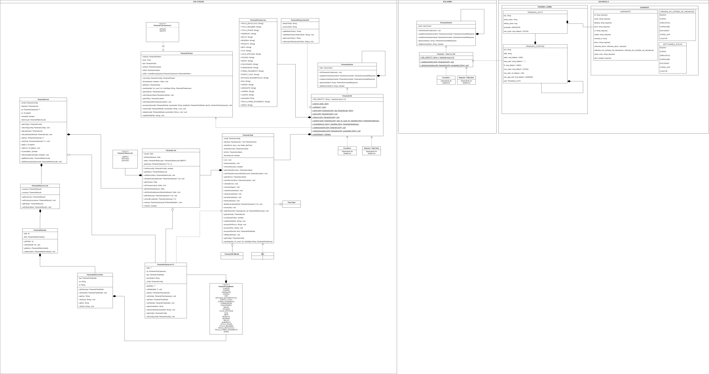

# Introdução
O PanamahSDK é dividido em três partes: PanamahStream, PanamahAdmin e os modelos de dados prefixados com Panamah, e. g.: PanamahLoja ou PanamahProduto.
PanamahStream: API de manipulação dos dados. Permite o envio ou remoção de dados através dos métodossave()edelete(), também disponibilizando a leitura de documentos fiscais através dos métodosreadNFe()ereadNFeDirectory(). A leitura de documentos fiscais os transforma em modelos de dados, permitindo que o software apenas complemente propriedades que não são enviadas para SEFAZ, como por exemplo, o id da seção de um produto. Além disso, o Stream possui hooks que são úteis tanto na validação quanto na adição de informações.PanamahAdmin: API de gerenciamento administrativo. Permite a criação e leitura de assinantes.Modelos de dados: Os modelos de dados são utilizados pelas APIs para executar ações no servidor. Eles são a implementação da estrutura dos dados no Panamah, porém são validados localmente antes de serem salvos ou deletados, permitindo agilidade e evitando requisições desnecessárias.

Assinantes são os clientes que adquirem o software da empresa parceira. Empresas parceiras consomem os serviços do Panamah.
# Credenciais e tokens
Todos os parceiros recebem um par de tokens de autenticação chamados AuthorizationToken e Secret, que são usados para autorizar o uso das APIs do SDK. Esses tokens devem ser mantidos de forma segura, sob o risco de uso indevido por terceiros.
# Execução contínua do PanamahStream
O fluxo de envio dos dados pelo PanamahStream se dá de forma contínua após a sua inicialização pelo método init() que recebe os tokens de autenticação e o id do assinante. Esse fluxo é executado assincronamente por thread ou agendamento de execução por intervalo no caso do javascript. Operações de salvamento ou deleção são escritas no disco em lotes que tem limite de tempo (5 minutos) e tamanho (5 KB). Quando atingido qualquer limite, uma requisição contendo as operações é disparada para o servidor. Devido a natureza assíncrona do fluxo de envios, é essencial que o método flush() seja chamado no fim da execução da aplicação, evitando que dados que foram salvos no lote corrente e ainda não atingiram um limite, sejam enviados apenas na próxima execução da aplicação.
# Hooks e eventos
Eventos são disparados antes de salvar ou deletar modelos e quando erros no processamento assíncrono acontecem. Esses eventos servem para facilitar a validação e complemento de dados, bem como tratar situações inesperadas:
# Tratando recursos pendentes
O PanamahStream dispõe do método de getPendingResources() que retorna uma lista de modelos cujos dados completos não foram enviados para o Panamah, porém foram referenciados por modelos enviados anteriormente. Por exemplo: um produto Coca-Cola (id: 111) pertence a seção Bebidas (id: 999). Este produto foi salvo utilizando o modelo PanamahProduto com a devida propriedade secaoId preenchida com 999, por motivo indeterminado, o serviço do parceiro não enviou a seção Bebidas (999) usando o modelo PanamahSecao. Executando o método getPendingResources(), uma lista contendo apenas um modelo PanamahSecao seria retornada com somente a propriedade id preenchida com 999. Caberia ao software do parceiro percorrer a lista, preencher o restante dos dados e salvar os modelos com o PanamahStream.
# Passo a passo
Obter os tokens de autenticação: AuthorizationToken e Secret.
Fazer a instalação da biblioteca específica da linguagem da sua aplicação
No bootstrap da aplicação, chamar a função
init()das APIs PanamahAdmin e PanamahStreamAtenção: O id do assinante deve ser um valor único, sendo recomendável o uso do CNPJ do assinante, assim como um controle externo para que o envio de dados não seja realizado em ambiente de homologação, por exemplo através da checagem de diretivas de compilação ou chave de uso.
É possível criar um assinante usando o modelo PanamahAssinante com o método
createAssinante()da API PanamahAdmin.Utilizar as funções
save()edelete()da API PanamahStream com os modelos de dados para enviar ou remover informações do Panamah.Na finalização da aplicação, chamar a função
flush()para garantir o envio de dados pendentes
# Diagrama UML
